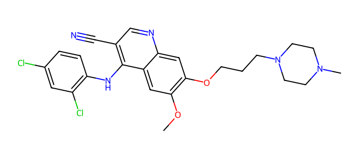
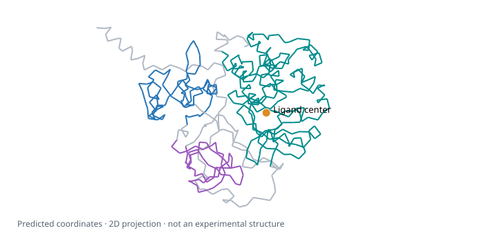

Internal reference · Snapshot: 14 Sep 2026 · Independent structure predictions + potency ranking


Exact ligand input: COc1cc2c(Nc3ccc(Cl)cc3Cl)c(cnc2cc1OCCCN1CCN(C)CC1)C#N
Domain boundaries: UniProt P12931. Gray = remaining residues. All 536 residues enter both models; no domain cropping.
download_bindingdb.py extracts the sample; prepare_example.py builds both requests directly from the row. The ranking script repeats the Boltz-2 request for all five rows, changing only ligand SMILES after verifying the same target sequence.
SEQ = the full Src amino-acid string; SMILES = the ligand string above. Symbols below stand for actual string/object values.
msa = {"main": {"a3m": {
"alignment": ">query\n" + SEQ + "\n",
"format": "a3m"
}}}A3M has one query sequence. No alignment search, templates, or experimental coordinates.{"inputs": [{
"input_id": "src_4521",
"molecules": [
{"type": "protein", "id": "A",
"sequence": SEQ, "msa": msa},
{"type": "ligand", "id": "B",
"smiles": SMILES}
],
"diffusion_samples": 1,
"output_format": "cif"
}]}POST :8000/biology/openfold/openfold3/predict
{"polymers": [
{"id": "A", "molecule_type": "protein",
"sequence": SEQ, "msa": msa}
], "ligands": [
{"id": "B", "smiles": SMILES,
"predict_affinity": true}
], "recycling_steps": 3,
"sampling_steps": 200, "diffusion_samples": 1,
"output_format": "mmcif",
"sampling_steps_affinity": 200,
"diffusion_samples_affinity": 5}POST :8001/biology/mit/boltz2/predict
Each model infers 3D coordinates independently. Neither request includes IC50; neither consumes the other model’s structure.
5 rows × 640 columns in BindingDB_top5.tsv, extracted from the September 2026 Articles release. One row = one reported ligand–target measurement; five ligands, one human Src sequence (P12931, 536 residues), one source paper.
| Fields used | Purpose |
|---|---|
| Target sequence · ligand SMILES | Model inputs: protein chain A + ligand chain B |
| Reactant set ID · monomer ID · article DOI | Measurement, ligand, and publication provenance |
| IC50 (nM) | Experimental potency label; lower = stronger. Never sent to either model. |
Shared input: full Src sequence + one ligand SMILES + query-only A3M alignment (one sequence; no homology search).
| OpenFold3 1.5.0 | Boltz-2 1.9.0 | |
|---|---|---|
| Request | inputs/openfold3.jsoninputs[].molecules | inputs/boltz2.jsonpolymers[] + ligands[] |
| Settings | 1 diffusion sample; CIF output | 3 recycling steps; 200 sampling steps; 1 structure sample; affinity enabled, 200 steps × 5 samples |
| Saved outputs | CIF complex, raw response, confidence scores | CIF complex, raw response, confidence scores, raw affinity score, binder probability |
| Original ligand 4521 run | Complex pLDDT: 32.46/100 pTM: 0.194 · ipTM: 0.416 No affinity prediction | Complex pLDDT: 0.814 raw ≈ 81.42/100 pTM: 0.910 · ipTM: 0.979 Raw affinity: −1.53125 · binder probability: 0.789 Derived IC50: 29.43 nM (experiment: 8.7 nM) |
Project conversion: pIC50 = 6 − raw; IC50 (nM) = 1000 × 10raw. The locally observed NIM 1.9.0 field affinity_pic50 has an extra ×1.364 factor; we derive values from the raw score instead. Confidence and binder probability are not potency.
| Ligand ID | Experimental IC50 (nM) | Predicted IC50 (nM) | Experimental → predicted rank |
|---|---|---|---|
| 6122 | 2.8 | 79.15 | 1 → 3 |
| 6121 | 5.1 | 26.42 | 2 → 2 |
| 4521 | 8.7 | 19.81 | 3 → 1 |
| 6123 | 12 | 194.56 | 4 → 4 |
| 6124 | 25 | 676.20 | 5 → 5 |
Spearman ρ = 0.60 · 7/10 pairs correct. Rank 1 = strongest. Top three reversed; weakest two correctly placed. Run data.
Limits: assay construct/conditions and training overlap unverified; one run per ligand. IC50 is assay-dependent. Model confidence does not validate a pose.
Structure viewer · Interpretation notes · Source paper · Static snapshot; regenerate documentation values after changing predictions.